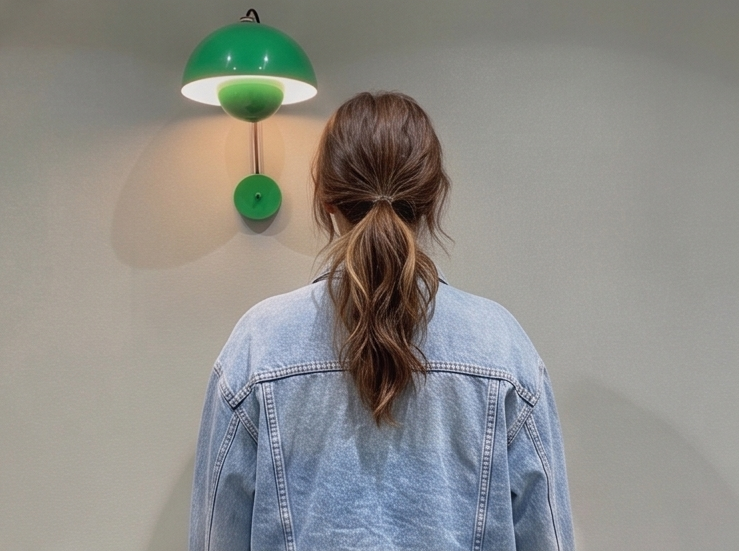
【卒業生：大橋さん（24歳）前職：風力発電機の部品検査 ➔ 転職：機械エンジニア】 現場で図面を見ながら部品を検査するなかで、「自分も設計側（上流工程）に挑戦したい」と思い、未経験からキャドガクで学習を決意。働きながらでもスキマ時間で、いつでもオンライン上で講師と学べたので、入校から40日間で機械エンジニアとして正社員転職ができました！

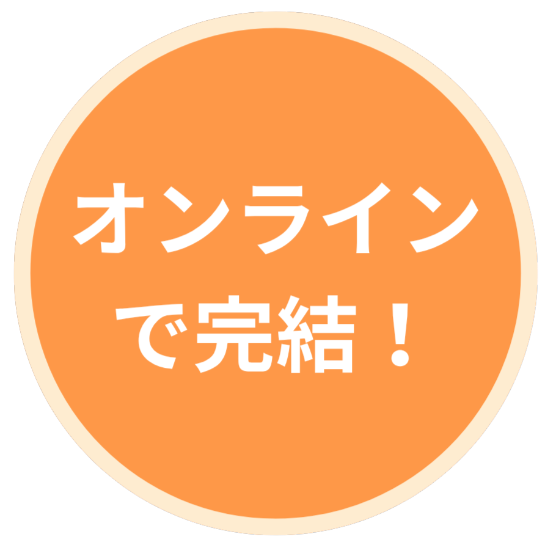
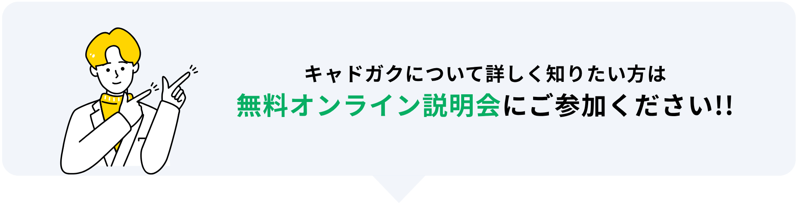
キャドガクは
最短30日間で
CADスキルの習得から、
就職まで目指すことができる
完全無料のオンライン
CADスクールです

事務職
飲食店員
営業職
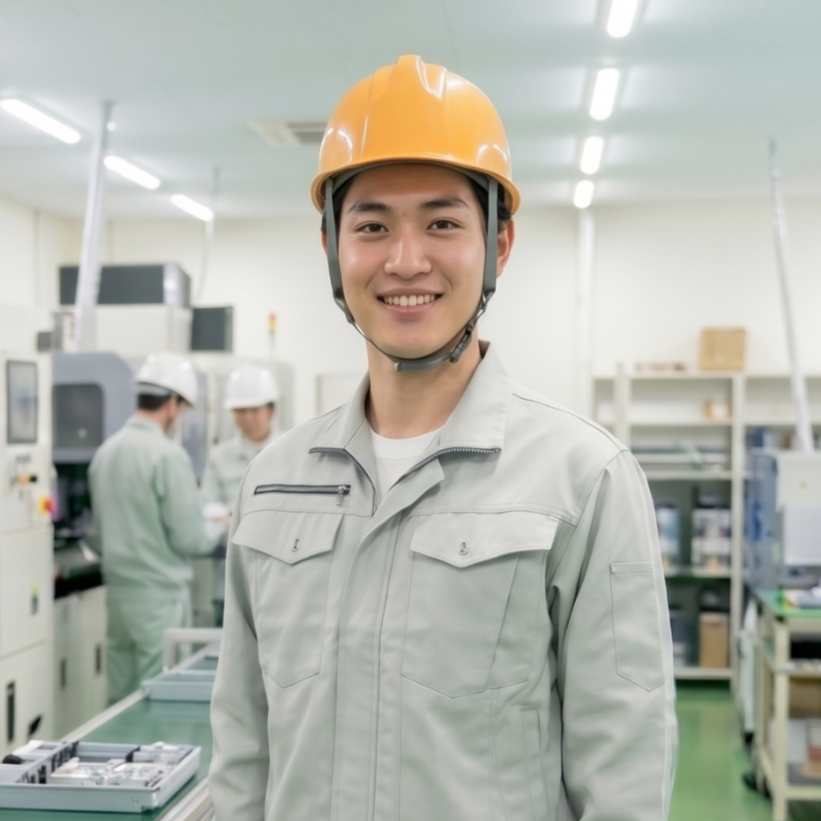
製造業
コンビニ店員
※写真はイメージです
事務職
飲食店員
営業職
製造業
コンビニ
事務職
飲食店員
営業職
製造業
コンビニ
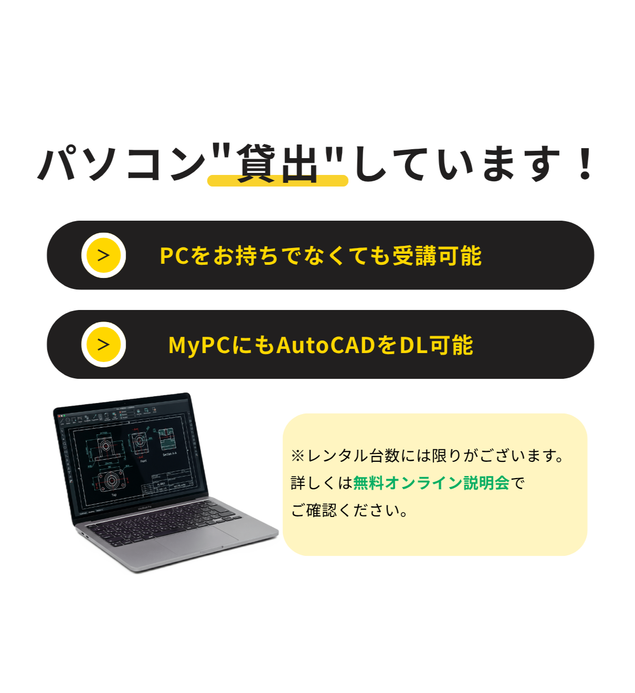
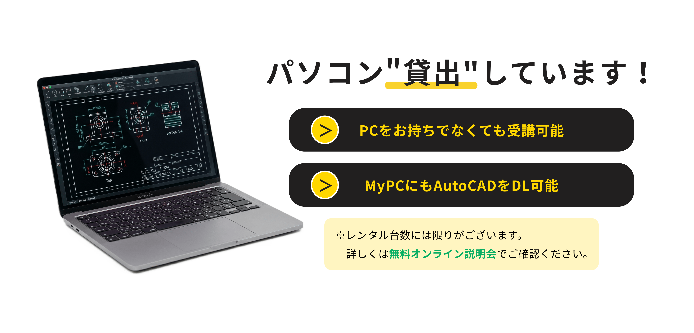
未経験からの就職に「本当に必要なスキル・知識」を採用企業にヒアリングし、効率的で就職に有利なカリキュラムを受講できます。 余計なカリキュラムを含まないため、学習のモチベーションを維持し、無駄なく最短ルートで就職ができます。 また、当スクールでは、業界を問わず就職に有利と言われている「AutoCAD」を使用します。 圧倒的な汎用性と、あらゆる設計業務の基礎となるソフトなので、他のCADソフトにもスムーズに対応できる土台が身に付きます。 採用企業が未経験者にまず求めているのは「AutoCADを使用した基礎力」なので、キャドガクでは最短ルートで徹底的に基礎力を身に付けていきます。
当スクールは、採用企業様から「採用手数料・協賛金」をいただく仕組みで運営しています。
そのため、受講生の皆様は受講料を一切負担することなく、研修を受けることができます。
一部のスクールでは研修中の離脱や、就職できなかった場合に違約金が発生しますが、当スクールは就職支援に自信があるからこそ「無料」で運営しています。
他社スクールでは30万〜70万円の費用がかかり、ローンの支払いに追われるケースも少なくありません。
キャドガクなら金銭的な不安を感じることなく、精神的なゆとりを持って学習のみに集中いただけます。
平日10:00〜22:00の間で、講師とのマンツーマン指導がオンラインで受け放題です。
仕事終わりの帰宅後やカフェなど、場所を問わずスキマ時間を活用してスキルを習得できます。
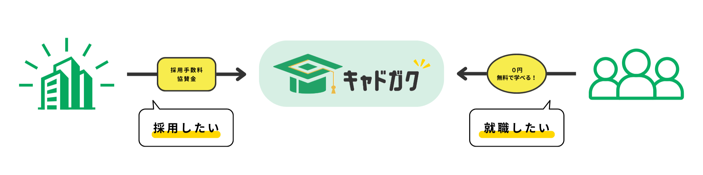
現役講師とキャリアアドバイザーが学習面と就活支援で、あなた専用のチームを結成。受講生1名に対し、プロ2名体制で就職まで伴走します。
採用側の目線で、面接練習や書類作成のサポートが可能。企業に求められるポイントを的確に押さえた指導を行うため、 未経験からでも内定を獲得することができます。
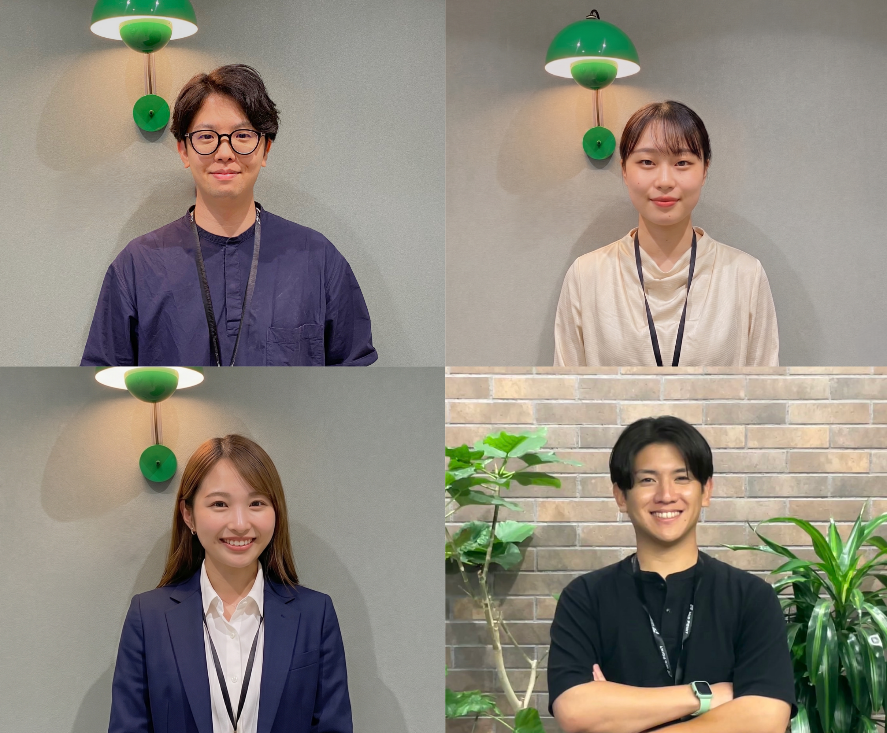
| 項目 | キャドガク | A社 | B社 | C社 |
|---|---|---|---|---|
| 受講料 | 完全無料 | 一部無料 （教材やソフト利用は有料） |
20〜40万円 | 40〜70万円 |
| 受講形式 | オンライン | 対面 | オンライン | 対面／オンライン |
| 就職先 | 正社員 | 派遣社員 （スクールが派遣元） |
記載なし | 派遣社員 （グループ会社が派遣元） |
| 受講期間 | 1ヶ月以内 | 14～16日間 | 6か月〜12か月 | 6か月〜12か月 |
※2026年5月時点の自社調査
当スクールのカリキュラムは、
特定の業界に偏ることなく
マンションやビル、住宅などの建物図面を作成。未経験からの競争率は高いですが、身近な建物づくりに携われます。
AI×機械の商品需要が急増中。現在の日本において、市場価値と将来性が最も高い注目の職種です。IoT機器や家電、自動車、ロボットなどの設計。
現場の工程や安全を管理。CADが使える施工管理は、図面の修正や指示がスムーズに行えるため重宝されます。
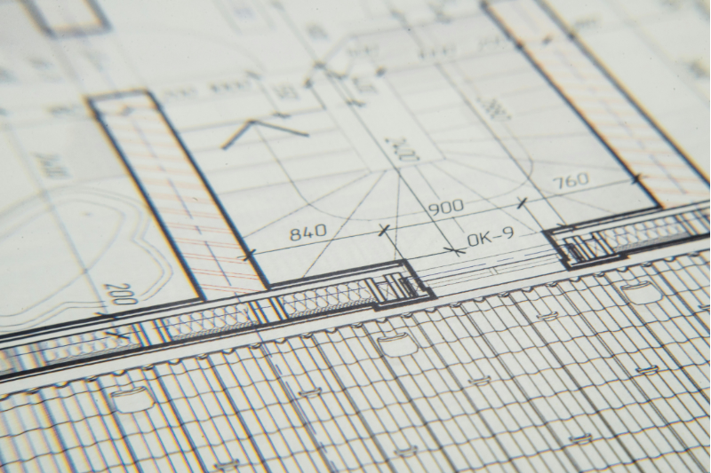
空調や給排水、電気配線などの図面を作成。建物の生命線を支える技術者として、需要が高い職種です。
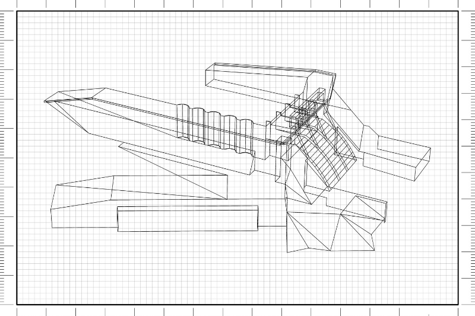
道路、橋、ダム、水道管などのインフラ図面を作成。公共事業に関わる案件が多く、将来にわたって安定性が高い職種です。
スマートフォンや基板などの回路設計。最新デバイスの心臓部を設計する、需要と専門性の高い職種です。
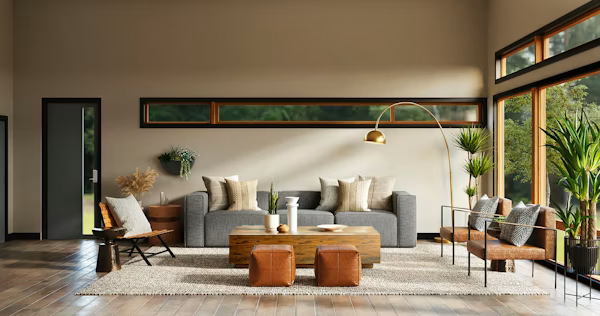
アパレル業界では型紙のデジタル作成に使用。家具の設計や店舗レイアウトなど、空間を形にするインテリア系でも活かせます。
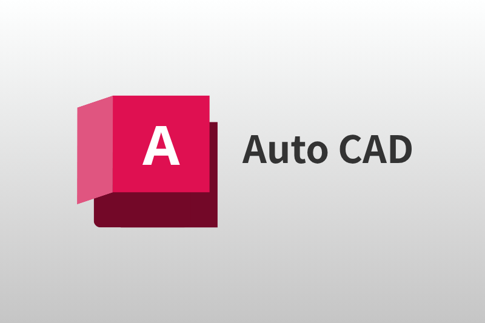
福祉や介護業界で車椅子、義肢、装具の設計や、物流倉庫業界で倉庫内の棚の配置や、効率的な荷物の積み込みシミュレーションなど、さまざまな現場でCADが利用されています。
※学習スピードには個人差があります。
平均1ヶ月で研修が終了し、
就職活動に移行しています。
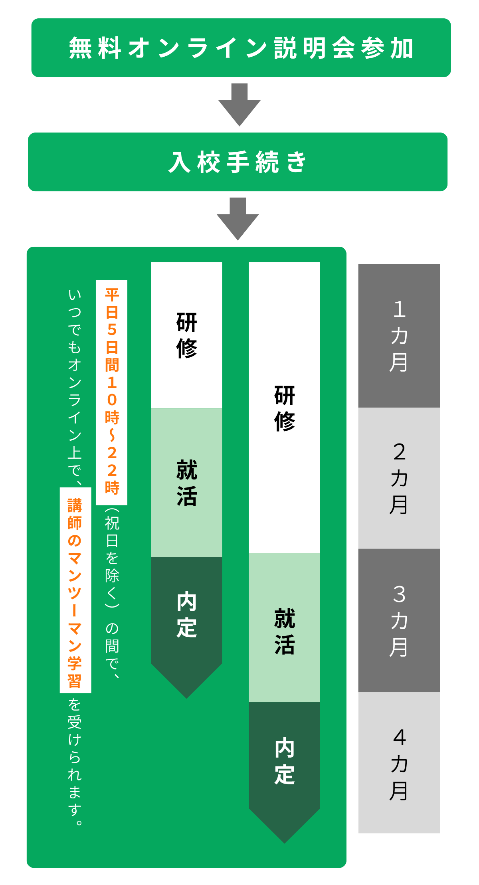
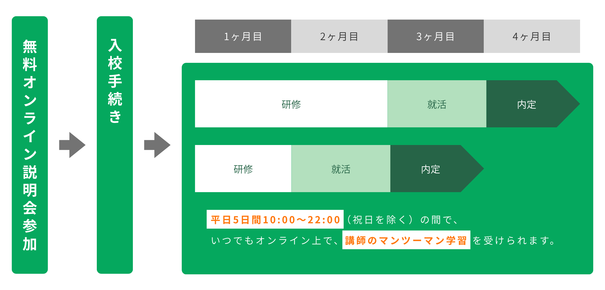

【卒業生：大橋さん（24歳）前職：風力発電機の部品検査 ➔ 転職：機械エンジニア】 現場で図面を見ながら部品を検査するなかで、「自分も設計側（上流工程）に挑戦したい」と思い、未経験からキャドガクで学習を決意。働きながらでもスキマ時間で、いつでもオンライン上で講師と学べたので、入校から40日間で機械エンジニアとして正社員転職ができました！
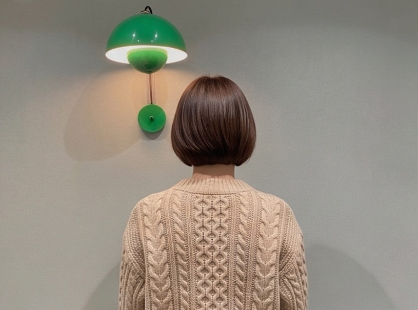
【卒業生：佐々木さん（29歳）前職：アパレル店長 ➔ 転職：建築CADオペレーター】 販売職を5年間経験し、20代最後に「将来のために、手に職をつけたい」と一念発起。完全未経験からでしたが、キャドガクの平日10時〜22時までいつでも講師に質問できる環境が大きな支えになりました。年齢や職歴の不安も、専任のアドバイザーが企業目線の選考対策でカバーしてくれたおかげで、無事に建築CADオペレーターとして、新しいキャリアへの一歩を踏み出せました！
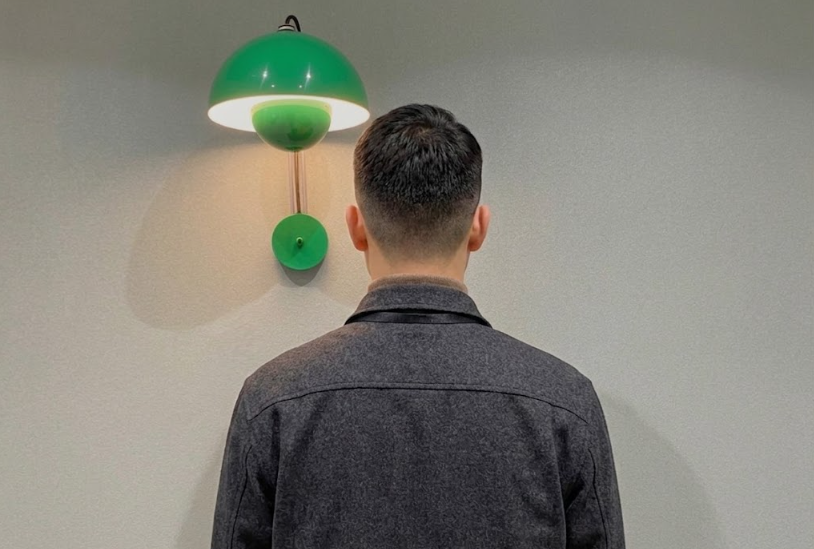
【卒業生：黒光さん（26歳）前職：大手住宅設備メーカー（鋳造・成形） ➔ 転職：機械エンジニア】 高校卒業後、約7年間製造に携わってきましたが、「より上流工程の設計職を目指し、市場価値を高めたい」と考えキャドガクを受講。現場経験という強みと、業界シェアの高い「AutoCAD」の基礎を徹底的に学習したことで、採用企業から高い評価を獲得。プロ2名体制のサポートが自信に繋がり、未経験から憧れの機械エンジニアへ転職ができました！
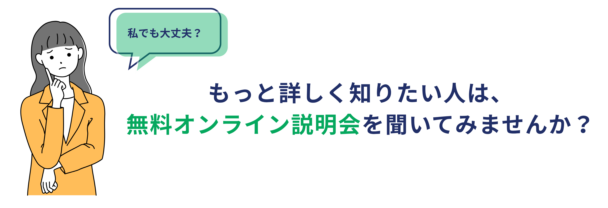
キャドガクは、火・木・土の週3回、無料オンライン説明会を開催しています。
A：当スクールは、提携する企業様からいただく協賛金や採用手数料によって運営が成り立っています。「専門技術を身につけたいけれど、高額な受講料が払えない」という方でも、無料で受講し、未経験から就職できる仕組みを作りました。
A：業界事情に精通した専任のキャリアアドバイザーが在籍しているからです。企業が求める人物像を把握しており、履歴書・職務経歴書の添削から面接対策まで、あなたに合わせた個別の就職支援を徹底して行うため、高い内定獲得力を持っております。
A：一切かかりません。何かしらの理由で、やむを得ず途中で辞めてしまった場合や、万が一就職に至らなかった場合でも、違約金やその他の費用をご請求することは一切ございませんのでご安心ください。
A：学歴や職歴に自信がなくても受講可能です。実際にニートやフリーター、他業界の方が未経験から学習し、就職を目指している方がいらっしゃいます。
A：当スクールでは、平日10時～22時の間、予約不要で、いつでも講師とオンラインで繋がり、マンツーマン指導が受けられます。「わからない所で立ち止まる」ことがないため、自己学習にありがちなモチベーションの低下を防ぎ、スムーズに学習を進められます。